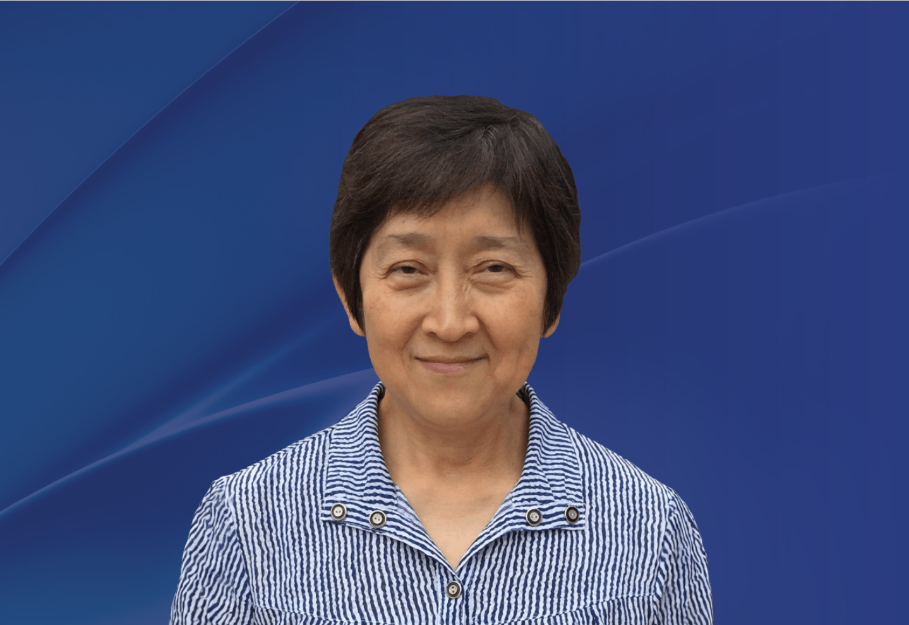

成員
朱有花教授
美國
伊利諾伊大學榮休教授
伊利諾伊大學榮休教授

Previous Terms：
2026 年
2025 年
2024 年
朱有花教授在美國加州大學伯克萊分校取得天文學博士學位。她曾於美國伊利諾伊大學任職天文學系教授，並於2005 年至2011年擔任系主任。 她於2014移居台灣，擔任中央研究院天文及天文物理研究所所長直至2020年。她現為國立中山大學講座研究員、中央研究院天文及天文物理研究所傑出訪問學者和伊利諾伊大學榮休教授。
她曾擔任國際天文學聯合會第六分部主席(2009–2012)、台灣中華民國天文學會主席(2014–2020)。她是美國天文學會會士及台灣物理學會會士。她於2021年獲得台灣中華民國天文學會頒發的天問獎，2021年獲頒日本國立天文台總幹事獎(工程與開發類別)，並於2023年榮獲加拿大天文學會皮特里獎。
她的研究主要是以大麥哲倫星雲為研究對象，利用多波長觀測恆星能量的反饋以及與星際介質的相互作用。
(註：所有中文譯本，皆以英文本為準)